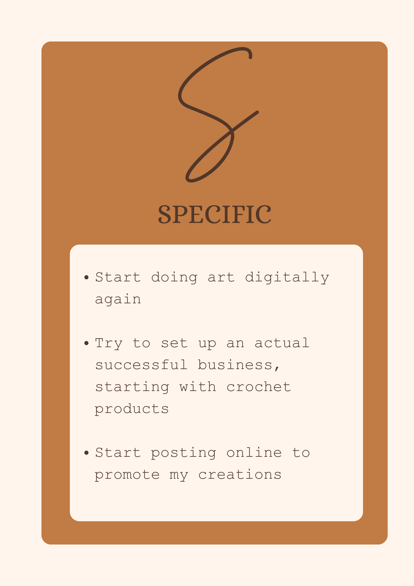
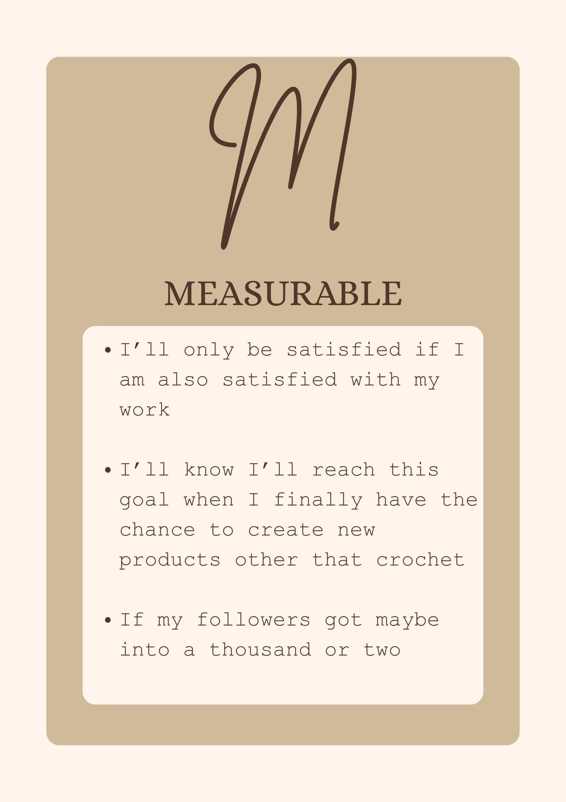
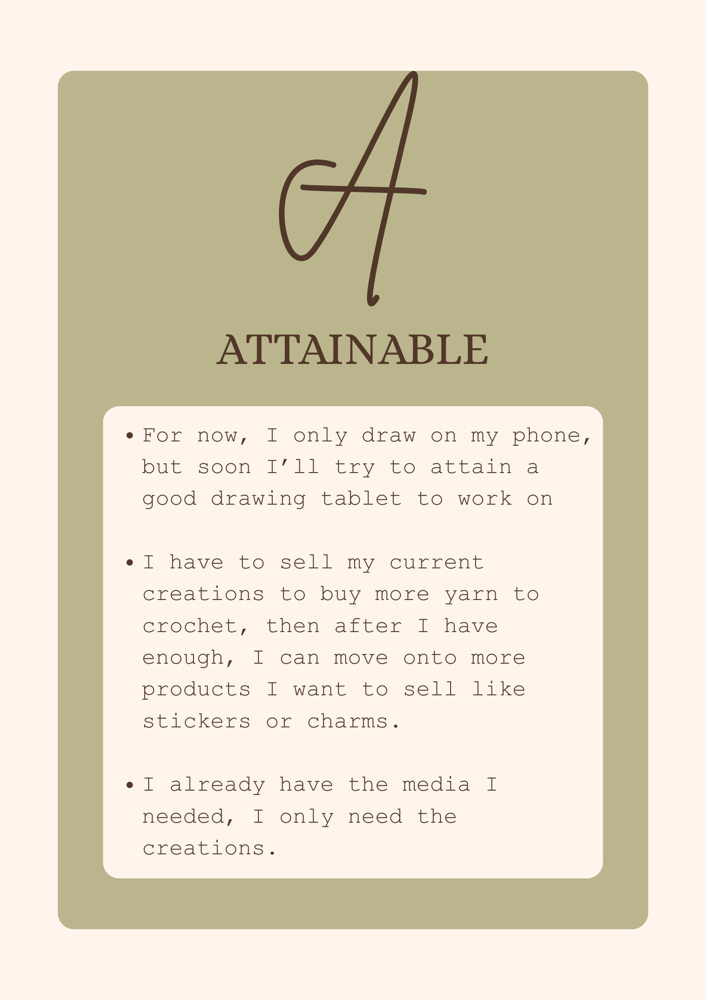
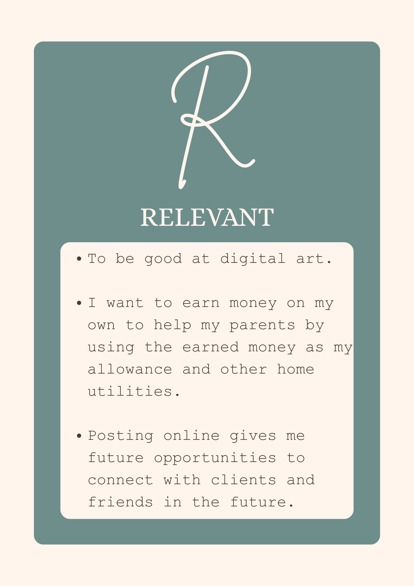
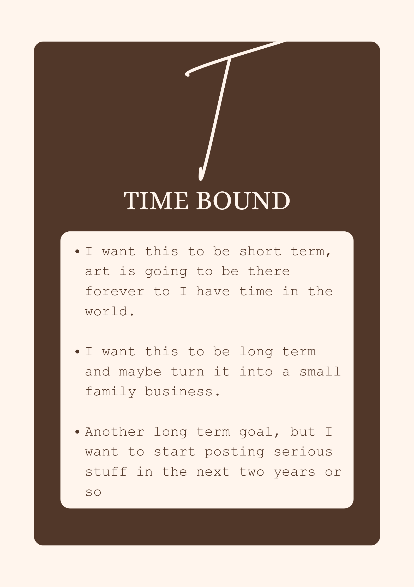

MISSION
VISION
sMISSION
N/A
VISION
N/A
PERSONALITY TEST
Openness to Experience: 2.70
I am having a hard time to actually think originally when it comes to ideas, so I need a little help with other existing ideas to be able to come up with my own.
Conscientiousness: 3.56
I’ll say I am reliable and conscious with my work, but I still tend to procrastinate at times.
Extraversion: 4.00
I am very good at voicing my concerns when it comes to groupworks. Personally I don’t fit this score as I am not an extrovert, but when it comes to groupwork, especially when I’m the leader, I am the loudest in voicing my concerns and achievements as a group.
Agreeableness: 2.67
When it comes to agreeing with certain subjects, my words tend to be very harsh and very critical, not only to anyone but also myself.
Neuroticism/Negative Emotionality: 1.75
Even when times are getting rough, I can still maintain calm in order not to panic.
CHARACTER STRENGTHS
Appreciation of Beauty & Excellence
I appreciate anything that has beauty, excellence, whether physically or within their skills. Appreciating the beauty of anything, living or non living, gives me the courage that I too, can create something beautiful as these things.
Gratitude
Always being aware and grateful for any opportunity given my way.
Leadership
I am the type of a leader who encourages and considerates my member’s strengths and weaknesses, organizes all the needed activities to be done, and is overall always there for my groupmates.
Judgement
I am a judgemental person, as I tend to overthink and overanalyze things, taking any evidence or ideas I have with a grain of salt, until I make my decisions fairly.
Curiosity
I am naturally curious with things I take interest in, so I always take every information within those interests very passionately.
LEARNING STYLE
I’m a Visual Learner! Well according to my learning style test per se, so I tend to understand something better when it is visually shown. Personally I still struggle with just showing myself visually, so this paired with detailed information, I ensure that I will understand the information very well. There are other times that I enjoy visualizing certain informations even if it’s not shown visually with a picture or a chart, but I have a hard time interpreting it with just words, so I interpret it visually too by drawing!
GROWTH





PERSONAL VALUES
Living in poverty as a child, dreams are very hard to reach. Knowing all my relatives go for a realistic approach in continuing life - just get whatever job you’ll land on - I try to follow their footsteps as well. Even now I doubt my career choice, whether I should go with my parent’s dreams for me: an engineer or an architect, or what others want me to be: working in offices or low paying jobs. But I always come back to my safespace, I always choose art over anything, I always choose to share my creations with everyone.
Because no matter how scary and uncertain the future is, I’ll never let go of my passion, my “hobby” , my safe space that’s always there with me even as a child. That Art isn’t just a fleeting hobby, it’s the one thing that helps me through tough times, helps me interpret my thoughts and feelings into a single picture, that I can be myself without anyone telling me what to do.